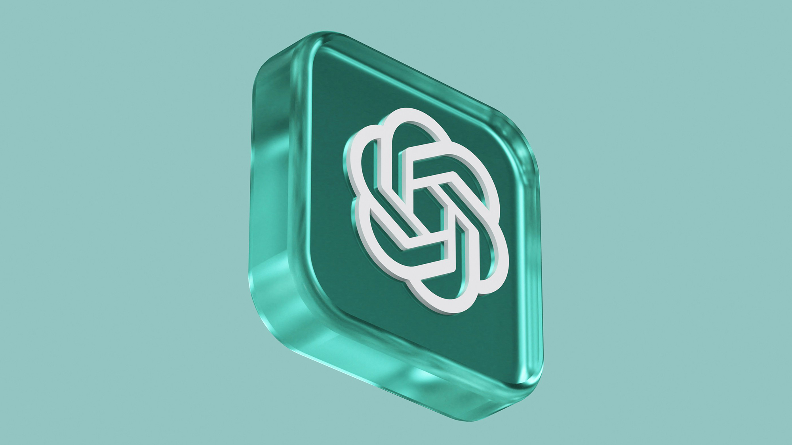

OpenAI offers app integrations in ChatGPT to allow you to connect your accounts directly to ChatGPT and ask the assistant to do things for you. For instance, with a Spotify integration, you can tell it to create personalized playlists that will show up right in your Spotify app. To get started, make sure you’re logged into ChatGPT. Then type the name of the app you want to use at the start of your prompt, and ChatGPT will guide you through signing in and connecting your account. If you want to set everything up at once, head over to the Settings menu, then click on Apps and Connectors. You can browse through the available apps, pick the ones you like, and it’ll take you to the sign-in page for each one. However, it’s important to note that connecting your account means you’re sharing your app data with ChatGPT. Make sure to review the permissions you’re giving when you’re linking your accounts. For example, if you connect your Spotify account, ChatGPT can see your playlists, listening history, and other personal information. (Sharing this info helps personalize the experience, but if you have privacy concerns, consider whether you’re comfortable with this level of access before connecting.) You can also disconnect any app whenever you want, right from the Settings menu.